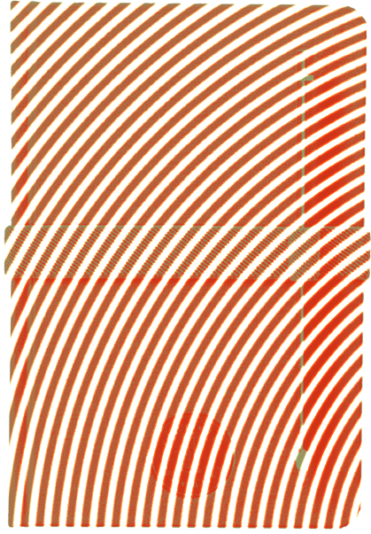
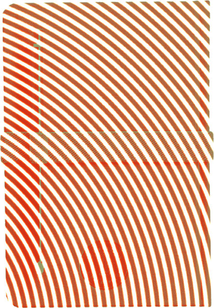

```html
<!DOCTYPE html>
<html>
<head>
    <meta http-equiv="Content-Type" content="text/html; charset=utf-8" />
    <meta http-equiv="X-UA-Compatible" content="IE=edge,chrome=1" />
    <title>活在背面的人</title>
    <link rel="shortcut icon" href="favicon.ico">
    <style>
        a {
            color: white;
        }

        .terminal {
            position: absolute;
            top: 0;
            left: 0;
            height: 100%;
            width: 60%;
            padding: 0 20%;
            background-color: #010101;
            color: white; /* 文字颜色改为白色 */
            font-family: consolas;
            word-wrap: break-all;
            display: flex;
            flex-direction: column;
            justify-content: center;
            align-items: center;
        }
        .terminal #title, .terminal #title-back {
            text-align: center;
            width: 100%;
            font-size: 6em;
            margin-bottom: 20px;
            transition: transform 0.5s ease, font-size 0.5s ease; /* 平滑过渡 */
            display: inline-block;
            vertical-align: top;
        }
        .terminal .text {
            display: block;
            margin: 10px 0;
        }
        .terminal .cursor {
            display: inline;
            animation: blink 0.75s linear infinite;
        }
        .terminal .c {
            position: absolute;
            bottom: 10%;
            right: 10%;
        }
        .terminal .c .hearth {
            display: inline !important;
        }

        @keyframes blink {
            0% {
                opacity: 0;
            }
            33% {
                opacity: 1;
            }
            66% {
                opacity: 1;
            }
            100% {
                opacity: 0;
            }
        }

        .cover-image {
            max-width: 600px; /* 调整最大宽度以适应横图 */
            height: auto;
            display: inline-block;
            vertical-align: top;
            margin: 0 20px 0 0;
            cursor: pointer; /* 鼠标悬停时显示为指针 */
            transition: transform 0.5s ease; /* 平滑过渡 */
        }

        body {
            margin: 0;
            padding: 0;
            display: flex;
            justify-content: center;
            align-items: center;
            min-height: 100vh;
            background-color: #010101;
        }

        .flip-container {
            perspective: 1000px;
            display: inline-block;
        }

        .flipper {
            position: relative;
            width: 100%;
            height: 100%;
            transform-style: preserve-3d;
            transition: transform 0.5s;
        }

        .flipper.flipped {
            transform: rotateY(180deg);
        }

        .front, .back {
            position: absolute;
            width: 100%;
            height: 100%;
            backface-visibility: hidden;
            display: flex;
            flex-direction: column;
            justify-content: center;
            align-items: center;
        }

        .back {
            transform: rotateY(180deg);
        }

        .text-container {
            position: absolute;
            bottom: 10%;
            left: 50%;
            transform: translateX(-50%);
            z-index: 1;
        }

        .flipped #title, .flipped #title-back {
            font-size: 4em; /* 翻转后缩小字体 */
        }
    </style>
    <script>
        window.console = window.console || function(t) {};
    </script>
    <script>
        if (document.location.search.match(/type=embed/gi)) {
            window.parent.postMessage("resize", "*");
        }
    </script>
</head>
<body translate="no">
    <div class='terminal'>
        <div class="flip-container">
            <div class="flipper" id="flipper">
                <div class="front">
                    <h1 id='title'>活在背面的人</h1>
                    
                </div>
                <div class="back">
                    <h1 id='title-back'>活在背面的人</h1>
                    
                </div>
            </div>
        </div>
        <div class='text-container'>
            <div class='text' id='text_1'></div>
            <div class='text' id='text_2'></div>
            <div class='text' id='text_3'>请点击笔记本</div>
            <div class='cursor'>_</div>
        </div>
        <div class='c'>
            活在背面的人出版社
        </div>
        <audio id="backgroundMusic" loop>
            <source src="music/background.mp3" type="audio/mpeg">
            您的浏览器不支持 audio 元素。
        </audio>
    </div>
    <script src='js/jquery.min.js'></script>
    <script>
        document.addEventListener('DOMContentLoaded', function() {
            const text1 = document.getElementById('text_1');
            const text2 = document.getElementById('text_2');
            const text3 = document.getElementById('text_3');

            // 示例文本
            text1.textContent = "未见其人，先闻其声。";
            text2.textContent = "这我们很多人是见过世面的，但好像是没见过世界的另一面。";
            text3.textContent = "请点击笔记本";

            // 动态更新光标
            setInterval(() => {
                const cursor = document.querySelector('.cursor');
                cursor.style.opacity = cursor.style.opacity === '1' ? '0' : '1';
            }, 500);

            // 获取音频元素
            const backgroundMusic = document.getElementById('backgroundMusic');

            // 点击图片时应用翻页效果并播放音乐
            const flipper = document.getElementById('flipper');

            flipper.addEventListener('click', function() {
                flipper.classList.toggle('flipped'); // 应用翻页效果
                if (backgroundMusic.paused) {
                    backgroundMusic.play();
                } else {
                    backgroundMusic.pause();
                }
            });

            // 循环播放翻页效果
            let isFlipping = false;

            function toggleFlip() {
                if (isFlipping) return;
                isFlipping = true;
                setTimeout(() => {
                    flipper.classList.toggle('flipped');
                    isFlipping = false;
                }, 500);
            }

            setInterval(toggleFlip, 2000); // 每2秒翻一次页
        });
    </script>
</body>
</html>

```